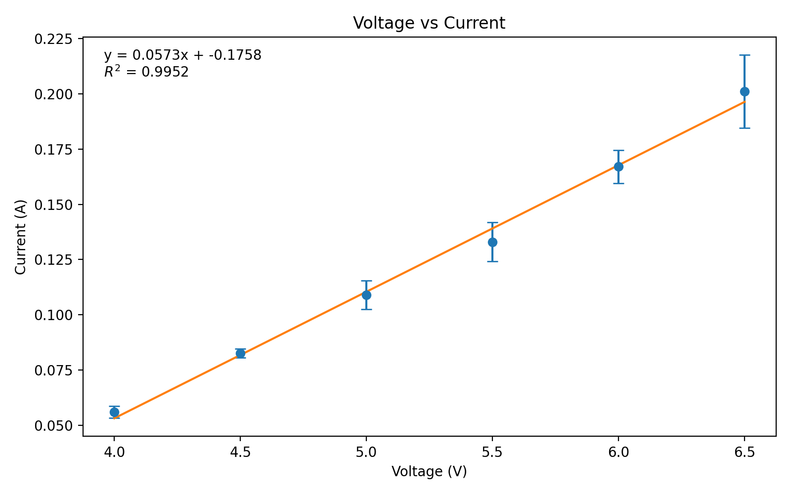
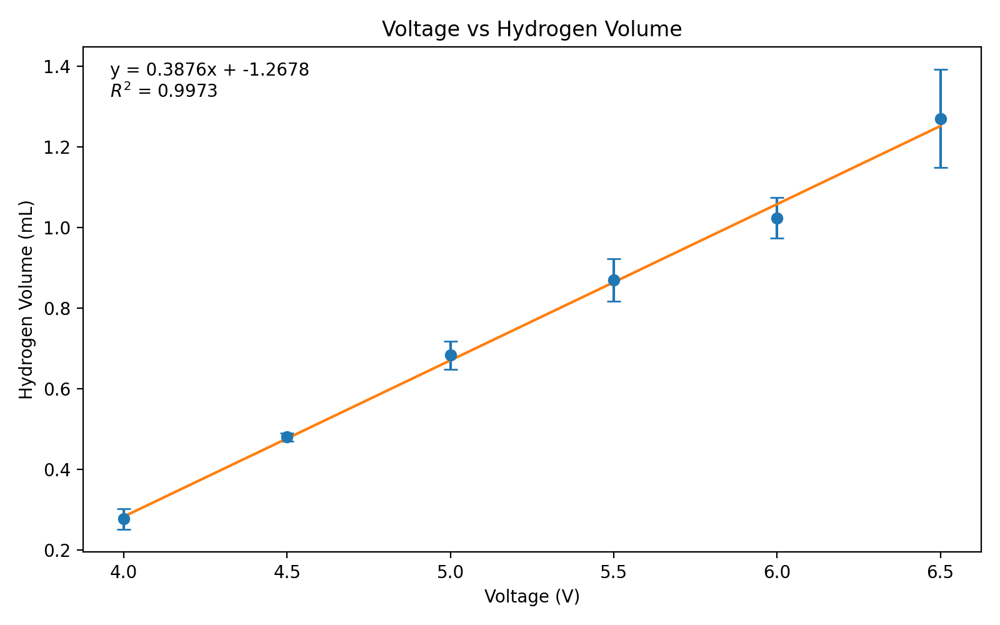
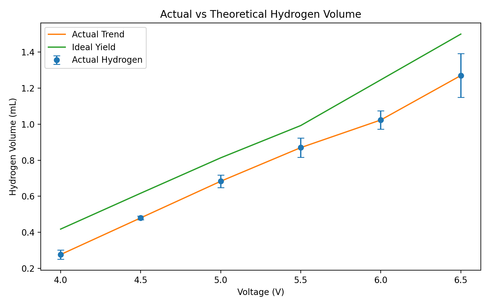
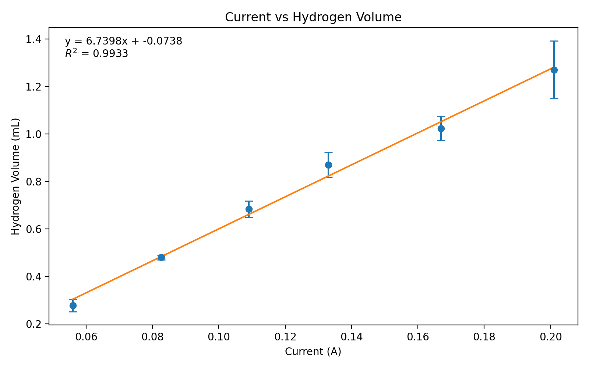
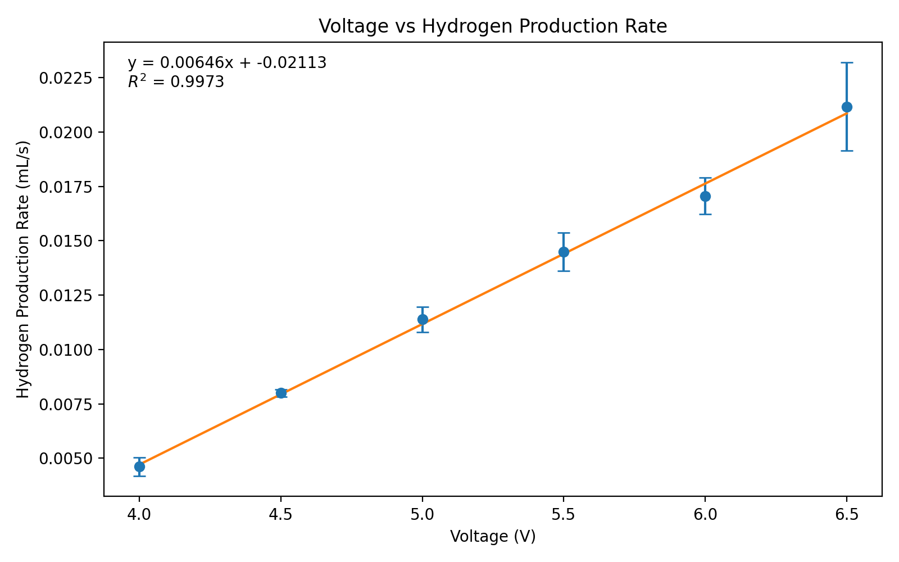
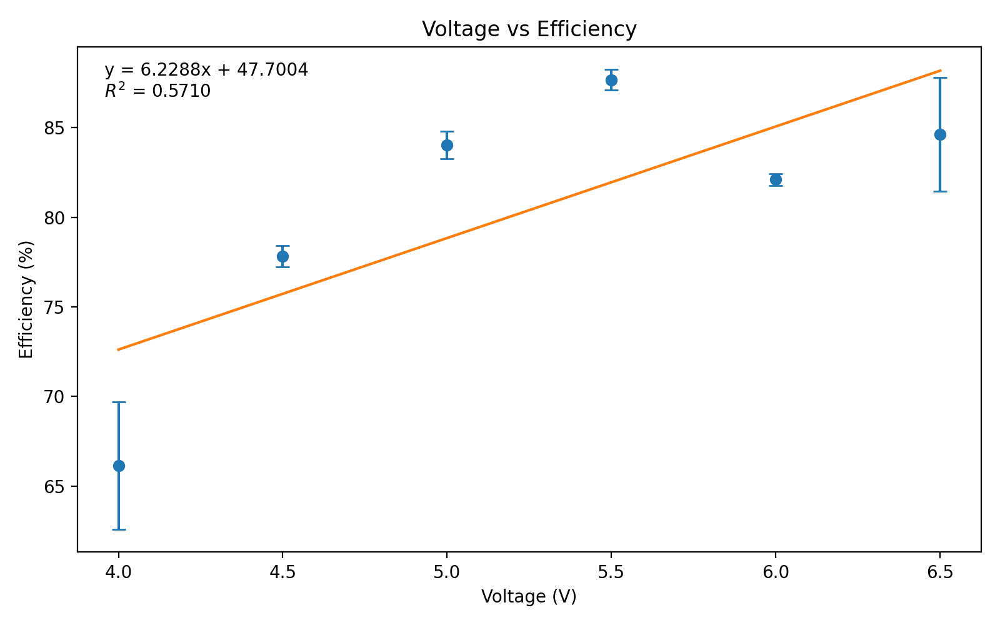

Chemical Engineering Project
Hydrogen Electrolysis Project
This project studies how applied voltage changes current, hydrogen yield, production rate, and system efficiency in a benchtop water electrolysis setup.
Overview
Project Goal
The goal of this project is to determine how voltage and current affect hydrogen production, compare experimental yield against the ideal yield predicted by Faraday's Law, and evaluate how efficiently the system converts electrical input into measurable hydrogen gas.
Theory
Why hydrogen increases
Water electrolysis splits water into hydrogen and oxygen. Hydrogen forms at the cathode through a reduction reaction that requires electrons. Ohm's Law explains how increasing voltage raises current, and Faraday's Law explains how increased current raises hydrogen production.
Voltage → Current → Charge → Hydrogen
Q = I × t
Hydrogen produced ∝ charge passed
Key reactions
Cathode: 2H₂O + 2e⁻ → H₂ + 2OH⁻
Overall: 2H₂O → 2H₂ + O₂
Key idea
Hydrogen production depends directly on current. Voltage affects hydrogen indirectly by increasing current.
Method
Experimental design
- Electrolyte: baking soda dissolved in 500 mL water
- Voltage range tested: 4.0 V to 6.5 V
- Run time held constant at 60 seconds
- Measured current and hydrogen volume for each trial
- Three trials collected at each voltage
Controlled variables
- Electrolyte volume
- Experimental run time
- Same electrode setup
- Same measurement approach for gas collection
Results
Data-driven analysis
These figures were generated in matplotlib from the processed dataset. Error bars show trial-to-trial variation across each voltage.






Error Analysis
Why measured values differ from ideal values
- Gas loss during collection can lower the measured hydrogen volume.
- Small-volume readings introduce measurement uncertainty.
- Current can fluctuate slightly during a run.
- Baking soda electrolyte has limited conductivity compared with stronger electrolytes.
- At higher bubbling rates, gas collection becomes less precise.
Why include this section
Error analysis strengthens the project because it explains why real systems do not perfectly match theoretical predictions. It also shows that the project was evaluated critically instead of only descriptively.
Best report additions
Include standard deviation, percent error, efficiency, and a discussion of how the actual yield compares with the ideal yield predicted by Faraday's Law.
Processed Data